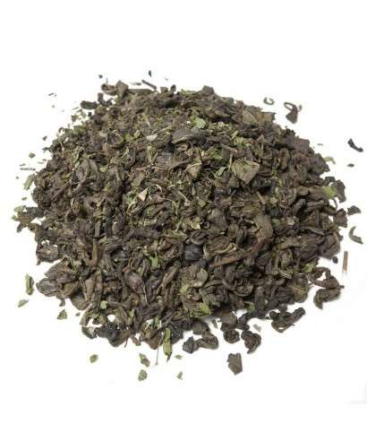
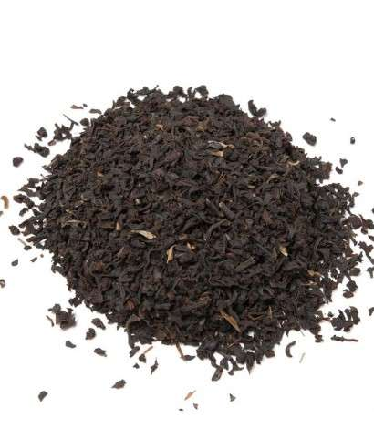
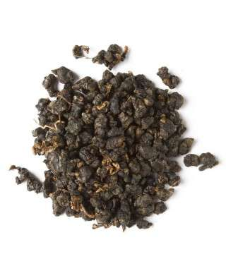

Considerat un dels tes verds de més qualitat, el te Xinès Gundpowder es caracteritza pel seu agradable sabor, ric i molt intens, sent el favorit dels amants del te verd. Resulta curiós veure com aquestes petites "boletes ", creixen al hidratar-se.

Àrab amb menta
×
Una de les millors maneres de començar el dia saludable i actiu amb aquest verd arbre de te. Un clàssic entre els clàssics, que no deixa de sorprendre pel seu intens sabor que us agradarà a tothom. Igual que la resta de tes verds, te propietats és un
anti-cancerígenes i antioxidants. És molt purificador. Conté una important dosi de calci i ajuda a prevenir la càries.

Assam Hamurtis
×
Una riquesa en maltat i un cos ple són les característiques d'aquest te de la regió d'Assam. Es tracta d'una barreja ideal per gaudir cada dia de Te a el més pur estil anglès, amb sabors únics que afavoreixen el benestar del nostre organisme. Perfecte
per a un esmorzar contundent i per a un brunch a l'estil anglosaxó. També indicat per a aquells dinars en què es busca una bona càrrega d'energia.

Oolong
×
Com si fossis al Paradís. Així és com et sentiràs després d'haver provat aquest te Oolong, amb aromes de fruites tropicals i de l'aroma de les flors, sobretot de les roses, embriagarà a totes les persones que el tastin. A diferència d'altres tes blaus,
aquest té una fermentació més llarga.